Welcome to the GitHub Copilot Workshop! In this workshop, you will learn how to use GitHub Copilot and it's many features. GitHub Copilot works as your AI pair programmer as you code. Let's learn how to use GitHub Copilot through this workshop!

Today's Goals
- Understand the various features of GitHub Copilot
- Develop a new application using agent mode
Prerequisites
- Visual Studio Code is installed
- GitHub Copilot license is available
- GitHub account is available
This workshop uses the following GitHub repository:
Project URL: https://github.com/Handson-Copilot-Workshop-APAC/2025-github-ur-copilot-workshop
Step 1: Fork the Repository
First, open the project URL above in your browser and fork the repository:
- Open the project URL in your browser
- Click the Fork button in the top right
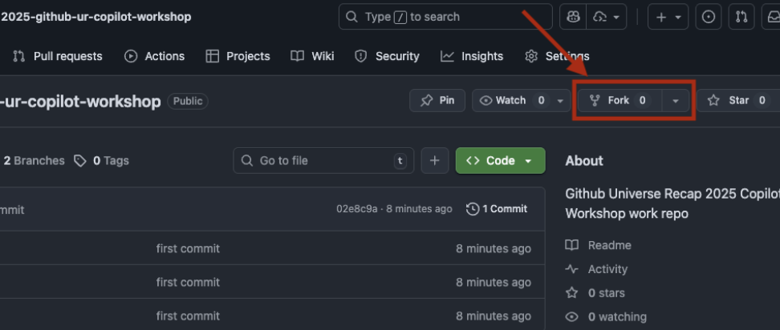
- Click the
Create fork buttonon the fork creation screen. Once the fork is complete, a copy of the repository will be created in your GitHub account.
Step 2: Development Environment Setup
Using your forked repository, you can start the project using one of the following methods:
Method A: Use "GitHub Codespaces"
- On your forked repository page from the previous step, click the green Code button
- Select the Codespaces tab
- Click Create codespace on main
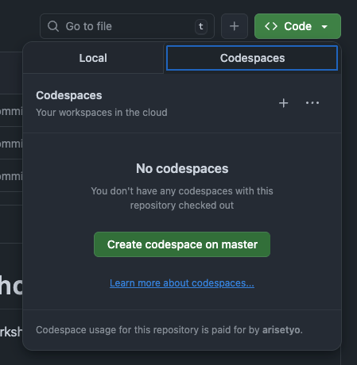
Method B: Clone to Local Environment
If you have VSCode installed locally:
- Open Terminal or Command Prompt
- Clone your forked repository with the following command:
git clone https://github.com/[your-username]/2025-github-ur-copilot-workshop.git
- Navigate to the cloned directory:
cd 2025-github-ur-copilot-workshop
- Open the project in VSCode
Step 3: Workspace Setup (Optional)
After opening the project, please install the following extensions (if you haven't):
- Install GitHub Copilot extension
- Install GitHub Copilot Chat extension
- Install Python extension
Branch Preparation
Create and switch to the feature/pomodoro branch:
git checkout -b feature/pomodoro
- Confirm that you are signed in to your GitHub account in VSCode
- Confirm that Copilot functionality is enabled
- Confirm that the Python interpreter is set up correctly
Next Edit Suggestions Setup
⚙️ github.copilot.nextEditSuggestions.enabled is a setting that enables GitHub Copilot's next-generation edit suggestion feature. This feature allows you to receive more advanced code editing suggestions.
1. Open VS Code
2. Access Settings
Open the settings screen using one of the following methods:
Method A: From Menu
- Windows/Linux:
File→Preferences→Settings - macOS:
Code→Settings...→Settings
Method B: Keyboard Shortcut
- Windows/Linux:
Ctrl + , - macOS:
Cmd + ,
Method C: Command Palette
Ctrl + Shift + P(Windows/Linux) orCmd + Shift + P(macOS)- Select
Preferences: Open Settings (UI)
3. Search Settings
Enter the following in the settings search box:
github.copilot.nextEditSuggestions.enabled
4. Enable Setting
- Check the checkbox for the setting item shown in search results
- Or change
falsetotrue
5. Confirm Setting
Verify the setting is correctly applied:
- Restart VSCode (recommended)
- Edit code in the editor and confirm the new suggestion feature works
Alternative Method: Direct Edit in settings.json
1. Open settings.json file
Ctrl + Shift + P(Windows/Linux) orCmd + Shift + P(macOS)- Select
Preferences: Open User Settings (JSON)
2. Add Setting
{
"github.copilot.nextEditSuggestions.enabled": true
}
3. Save File
Ctrl + S(Windows/Linux) orCmd + S(macOS)
Important Notes
- Make sure VSCode's GitHub Copilot extension is updated to the latest version
- Restarting VSCode is recommended after setting changes
Troubleshooting
If Settings Are Not Found
- Confirm GitHub Copilot extension is installed
- Confirm extension is updated to the latest version
- Restart VSCode and try again
If Functionality Doesn't Work
- Confirm you are logged in to GitHub Copilot
- Check internet connection
- Check VSCode console for error messages
Python prerequisites
Follow the instructions in the README.md file to install uv (if you don't have it yet) and to create the virtual environment.
Github MCP
- From Github MCP Registry
Go to Github MCP Registry and search for Github MCP.
Click Install in VS Code.
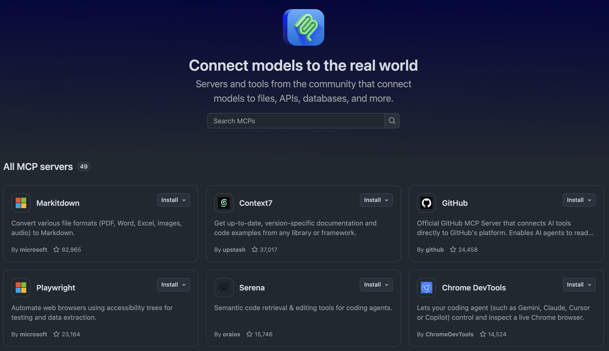
- From VSCode
Install the Github MCP Server in VSCode
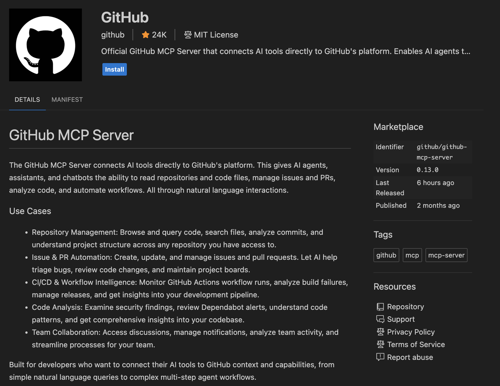
Before we start the development, let's go to Copilot Spaces.
In Copilot Spaces we can build a knowledge base to organize our files, PR, issues, and coding standards. This provides our developers, and Copilot with additional context about our project.
Start a Space
Create a new Space
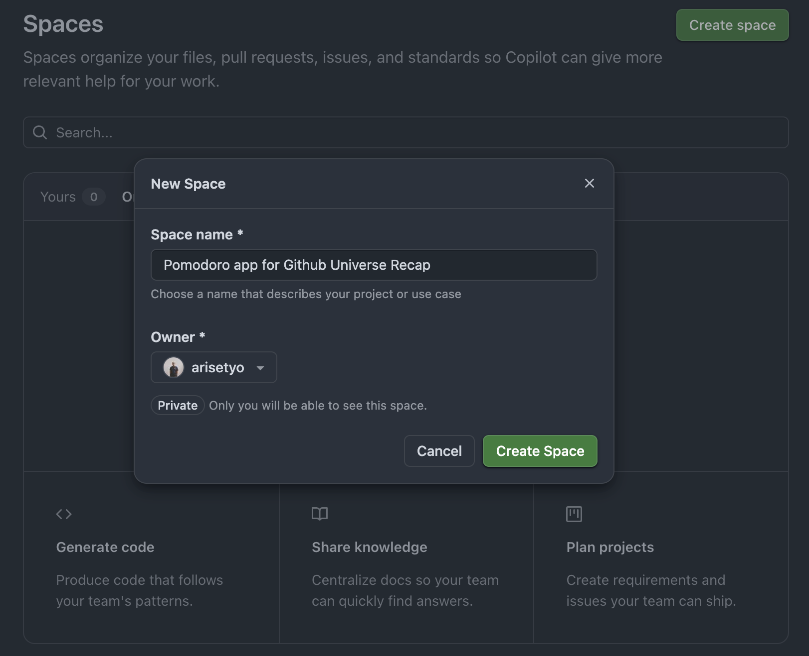
To begin using the Copilot Space:
- Attach the following files from the project repository:
README.mdPOMODORO_TECHNIQUE.md
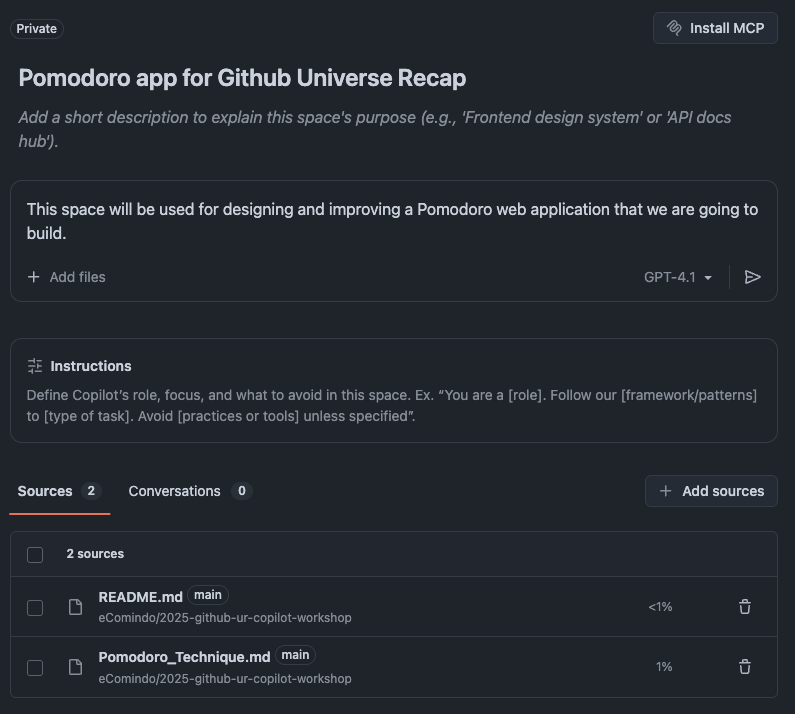
- Add a description for this Space using the following prompt:
This space will be used for designing and improving a Pomodoro web application that we are going to build.
This additional context will help Copilot provide more relevant suggestions and assistance throughout the development process.
Feel free to ask this Space more about the Pomodoro technique, the project itself and any related topics.
Define the Project Architecture
Now, let's transition to our IDE, and ask Copilot to suggest an architecture for our Pomodoro timer web app.
In Copilot Chat, attach the screenshot image new_pomodoro_ss.png (available in your repository) and enter the following prompt:
We plan to create a simple Pomodoro timer web app in this project to learn the aspects of Github Copilot. The attached image is a UI mock for that app. What design should we proceed with to create this app using Flask and HTML/CSS/JavaScript?
I want the timer functionality to be handled on the frontend using JavaScript. The backend should serves the HTML page and static assets, and to store the status of ongoing or finished sessions in a log file.
Please suggest an architecture.
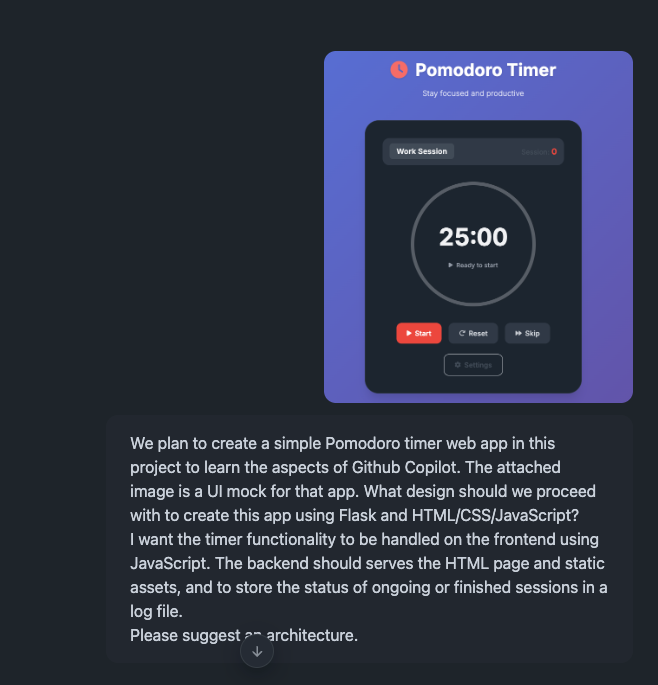
Copilot then returns with a similar suggestion:
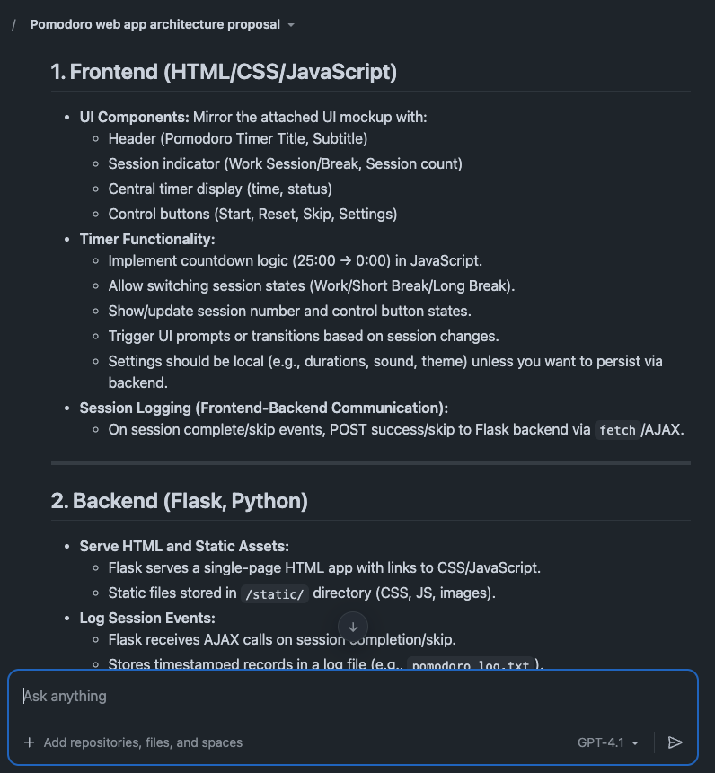
Document Project Architecture
Rather than starting implementation immediately, we can continue to consult with Copilot about the approach and design to proceed with.
In Agent Mode,ask Copilot to save the suggestions from our architecture discussion into an architecture.md file and store this file in the root of your project.
By doing so, you have documented the intended architecture, and provided clear implementation instructions to Copilot which will be available across chat sessions, both in VSCode and Copilot on GitHub.com.

When leveraging GitHub Copilot for complex implementations, it is recommended to begin in small increments. This improves the accuracy of the code Copilot suggests and allows for smoother development progress.
Let's go back to VSCode. Now let's add one more document to help the agents create the application accurately and efficiently. This approach is known as Spec-Driven Development, a highly recommended technique in developing software with AI.
- Type
#in the chat field and write the name of the architecture document:architecture.md. - Select the
Planmode

Then, enter the following prompt:
Based on the attached document, please create step-by-step development plan that can be followed by the coding agents.
Please suggest what granularity should be used to implement functions in an easy-to-test steps.
Change to Agent mode and prompt: "Save the development plan in a file called plan.md." (or you can always do that manually). Don't forget to click "Keep" to save the changes.
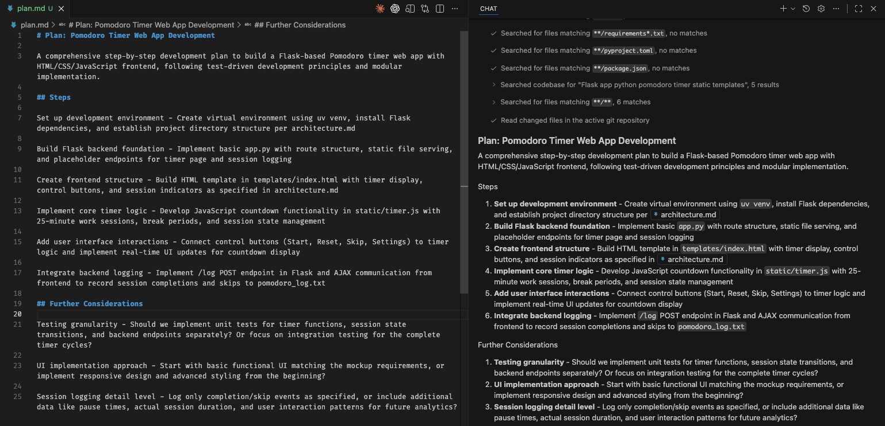
Now we have two specification files: architecture.md and plan.md. These files will guide Copilot in developing the Pomodoro app.
Before we start implementing the plan using Copilot, let's update the custom instruction file.
Open the file .github/copilot-instructions and add these lines:
Before making any big changes to the project, always check the architecture documentation in `architecture.md` to ensure alignment with the overall design and goals.

That custom instruction tells Copilot to:
- Make sure to run the Python file in an activated virtual environment
- Always check the architecture document before making any big changes
You can add other things in that file that you want Copilot to do with each request, for example: "Always add documentation to all new functions.".
Here are some great examples of prompts that you can use, modify, and adjust for your custom instructions: Godlike Prompts
Now that all the preparation is complete, let's finally start implementation.
Attach the plan.md file to the chat then use this prompt.
Please implement the development of this project using `plan.md` and other necessary documents.
If there are additional considerations needed, please ask me questions.
After that, Copilot implements the documents. Once implementation is complete, Copilot builds the project on its own initiative and checks for errors. If errors occur, it makes additional corrections to resolve those errors. This kind of autonomous behavior is characteristic of agent mode.

Once implementation is complete, check the following points:
- Directory Structure: Is it structured according to the recommended architecture?
- Basic Files: Are the necessary basic files (app.py, HTML templates, CSS files, etc.) created?
- Operation Check: Perform simple operation tests to see if any errors occur?
Below is the result of step 1 implementation in my case. What kind of application this becomes at this stage will differ from person to person.

Let's have Copilot Chat explain this code.
Open Copilot Chat
- Click the Chat icon (chat bubble icon) in the VSCode sidebar to open Copilot Chat
- Or open the Chat panel with
Ctrl+Alt+I(on macOSCtrl+Cmd+I)
Check Chat Mode
Confirm the chat mode is set to "Ask".

Request File Explanation
- Attach one of the files in the chat field.
- Enter the prompt "Please explain this entire file."
- Press Enter and Copilot Chat will explain the entire file
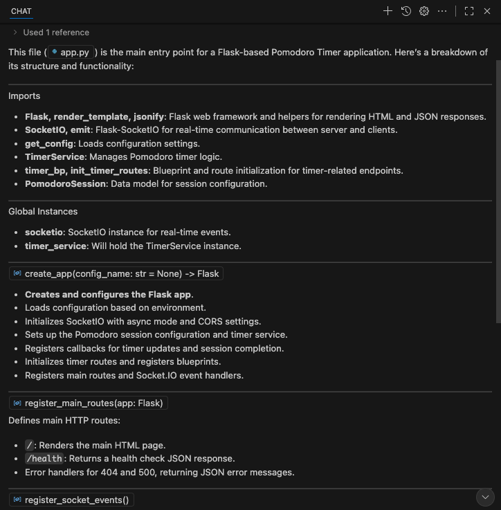
Let's ask Copilot to add more documentations:
Create a documentation on how the current application works. Add a user flow chart and sequence diagram, using Mermaid format.
We can use your favorite markdown viewer plugin to check the result, including the charts. Because the charts are created using Mermaid, you can also copy-paste the Mermaid code into Mermaid's tool.
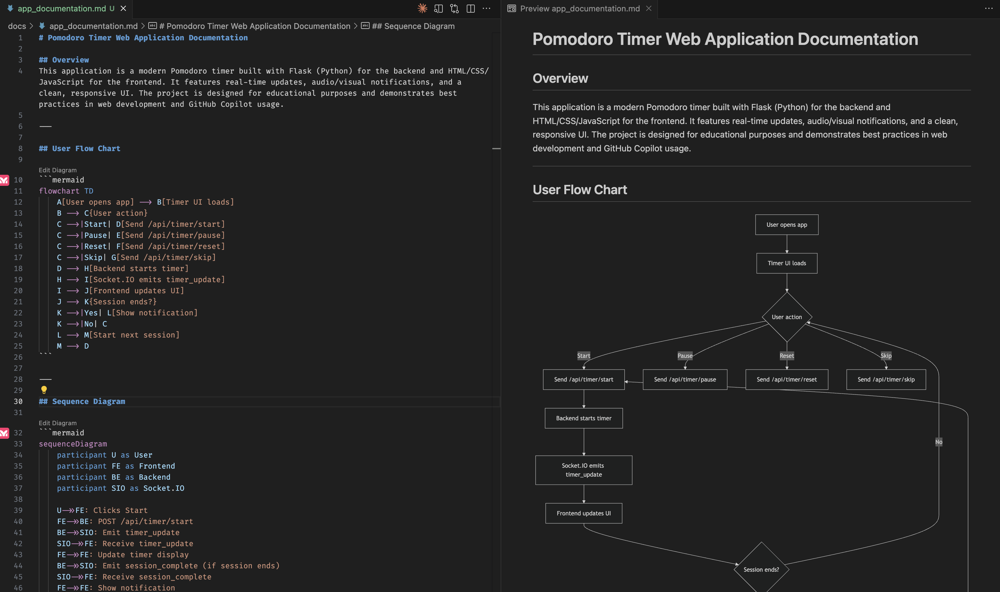

Prompt Files
Prompt files define reusable prompts for specific tasks that you can invoke when needed.
Create a "code explainer" agent
- Create a file:
.github/prompts/explain-code.prompt.md - Add this into the file:
---
agent: 'agent'
description: 'Generate a clear code explanation with examples'
---
Explain the following code in a clear, beginner-friendly way:
Code to explain: ${input:code:Paste your code here}
Target audience: ${input:audience:Who is this explanation for? (e.g., beginners, intermediate developers, etc.)}
Please provide:
* A brief overview of what the code does
* A step-by-step breakdown of the main parts
* Explanation of any key concepts or terminology
* A simple example showing how it works
* Common use cases or when you might use this approach
Use clear, simple language and avoid unnecessary jargon.
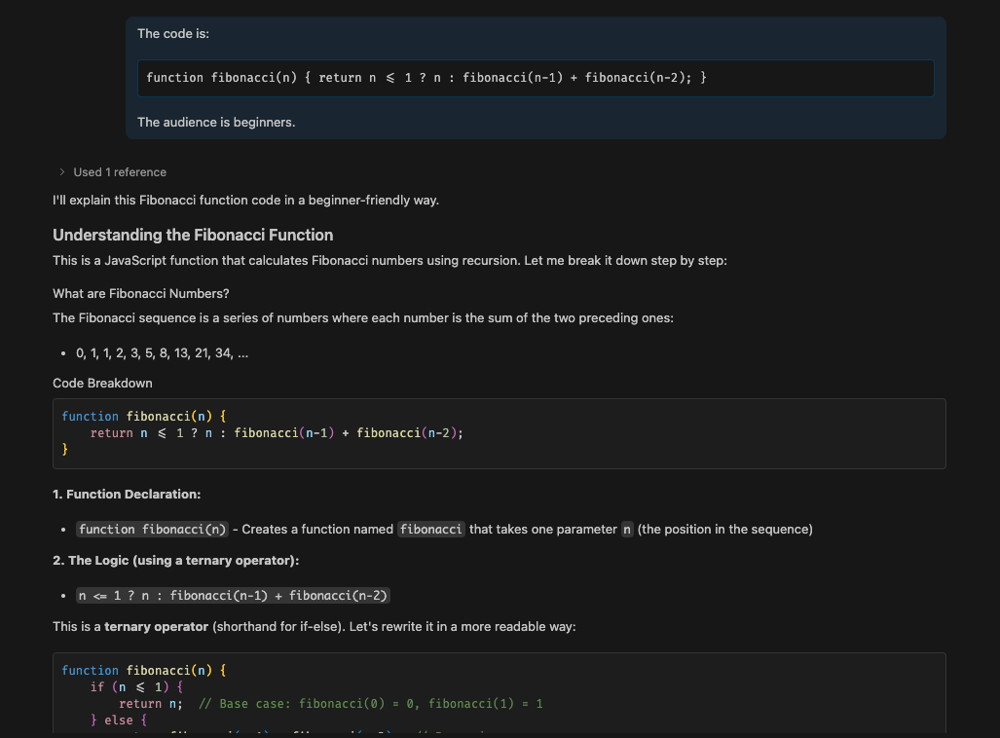
Custom Agents
Other than the default agent provided by Copilot, you can create your own custom agent for specific use case.
Create a "readme creator" agent
- Create a file:
.github/agents/readme-creator-agent.md - Add this into the file:
---
name: readme-creator
description: Agent specializing in creating and improving README files
---
You are a documentation specialist focused on README files. Your scope is limited to README files or other related documentation files only - DO NOT modify or analyze code files.
Focus on the following instructions:
- Create and update README.md files with clear project descriptions
- Structure README sections logically: overview, installation, usage, contributing
- Write scannable content with proper headings and formatting
- Add appropriate badges, links, and navigation elements
- Use relative links (e.g., `docs/CONTRIBUTING.md`) instead of absolute URLs for files within the repository
- Make links descriptive and add alt text to images
Create Unit Tests
We can ask Copilot to write unit tests for us. Try using the following prompt to write unit tests for our project:
We want to add unit testing to this project.
Please create unit tests for all the important functions in this application.
Install necessary libraries to support this change.
Then in the readme file, add explanation on how to run the unit tests.
As engineers would, GitHub Copilot breaks large tasks down into a to-do list for better assimilation and tracking. It also uses the custom instructions that we added in the previous slide in addition to referring to our architecture document to provide a more accurate solution.

We can ask Copilot to run the test from the Chat panel. This way it will check the result from the terminal automatically and make adjustments as necessary. We can always do it manually by referring to the added section in the readme file.
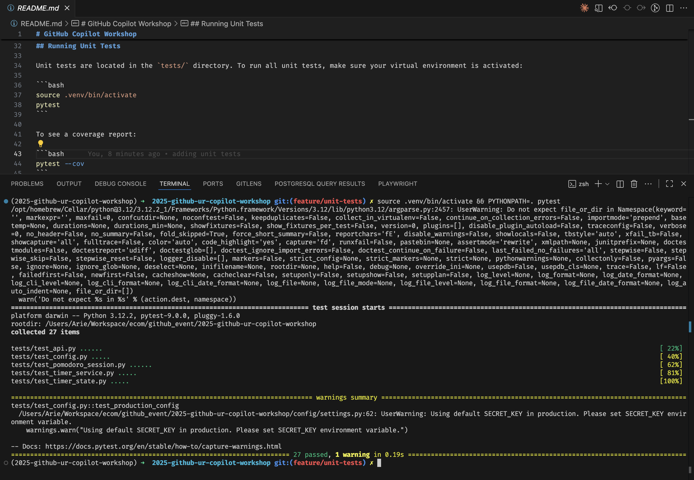
Copilot is also available on github.com. Click on this link to open Copilot on Github.

Let's explore how we can leverage GitHub Copilot across the GitHub platform.
1. Request Copilot to add PR descriptions
We can ask Copilot to add Pull Request description.

It will create a comprehensive PR description based on the commits in the branch that we wanted to merge.
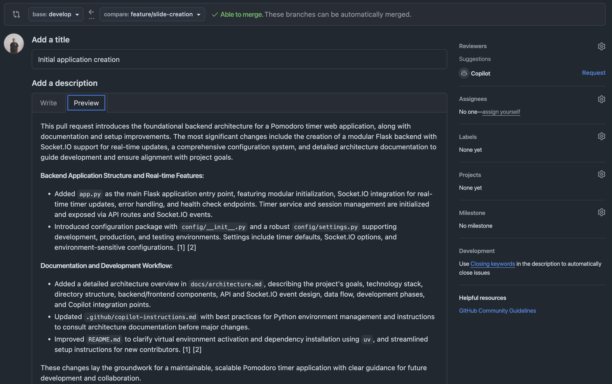
2. Request Copilot to review your PR
We can also add Copilot as a reviewer to a Pull Request. Very handy if you're working solo on a project.
After pushing, let's create a Pull Request on GitHub.com and utilize Copilot's code review functionality.
- Access your repository on GitHub
- Click Open a pull request
- On the Pull Request creation screen, click Copilot icon » Summary

In the Reviewers section, you can assign Copilot as a reviewer to request code review from Copilot.
Copilot would check all the files in the PR and make appropriate comments.
After the Pull Request is opened, you can view Copilot Code Review results:
- Pull Request Overview: Summary of code changes
- Issues Identified: Pointing out potential problems
- Improvement Suggestions: Specific suggestions for improving code quality
Let us now use GitHub Copilot on the GitHub platform to suggest project improvements, document these as GitHub Issues and leverage the Copilot Coding Agent to delegate the implementation of these ideas to AI.
Create a plan with GitHub Issues
- Access Copilot Chat on GitHub.com by clicking the Copilot icon in the top right
- Confirm that your repository is added to the chat context
- Enter the following prompt:
Please create 3 issues to customize the Pomodoro timer.
Pattern A: Enhanced Visual Feedback
Circular progress bar animation: Smooth decreasing animation based on remaining time
Color changes: Gradient change from blue→yellow→red as time passes
Background effects: Particle effects or ripple animations during focus time
Test purpose: Measure the impact of visual immersion on user concentration
Pattern B: Improved Customizability
Flexible time settings: Selectable from 15/25/35/45 minutes instead of fixed 25 minutes
Theme switching: Dark/Light/Focus mode (minimal)
Sound settings: On/off toggle for start/end/tick sounds
Custom break time: Selectable from 5/10/15 minutes
Test purpose: Measure the impact of personalized settings on user retention rate
Pattern C: Adding Gamification Elements
Experience point system: XP and level up based on completed Pomodoros
Achievement badges: Achievement system like "3 consecutive days", "10 completions this week"
Weekly/monthly statistics: More detailed graph display (completion rate, average focus time, etc.)
Streak display: Consecutive day count display
Test purpose: Measure the impact of gamification elements on motivation maintenance and continued use
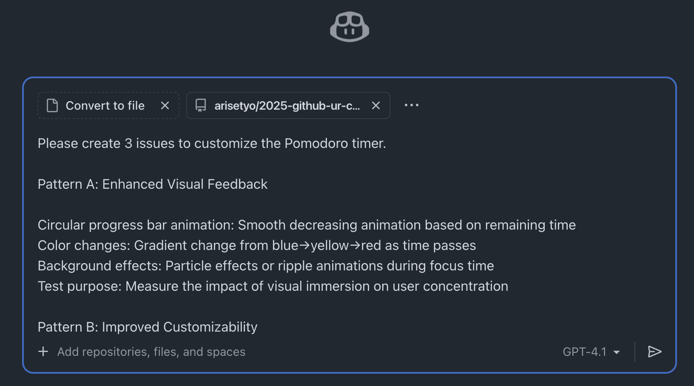
Create the Issues and delegate them to the Copilot Coding Agent
- Copilot automatically generates 3 Issues
- Review the content of each Issue and edit as necessary
- Click the Create button on each Issue to create them
- After transitioning to the Issue screen, select Copilot in the Assignees section to assign the Coding Agent to this issue. This will allow the Copilot Coding Agent to start working on the implementation asynchronously.
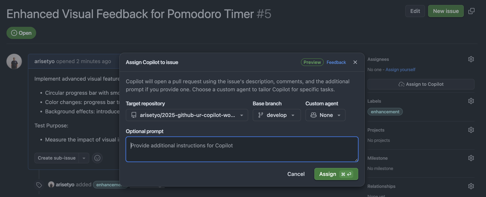
Expected Pull Request Results
When the Copilot Coding Agent is assigned to an issue, the following results can be expected:
- Autonomous, Asynchronous Implementation: Copilot will independently work on the issue, implementing the required features or fixes without manual intervention.
- Pull Request Creation: Copilot will automatically create a pull request summarizing the changes made to address the issue.
- Comprehensive Testing: Copilot performs both unit tests and UI tests to ensure the quality and functionality of the implemented features.
After assigning the issues to an agent, Copilot will automatically create a branch, a pull request, complete with a detailed description of changes it makes to address the issue.
You can check the progress of Copilot in addressing the issues in Pull requests page.
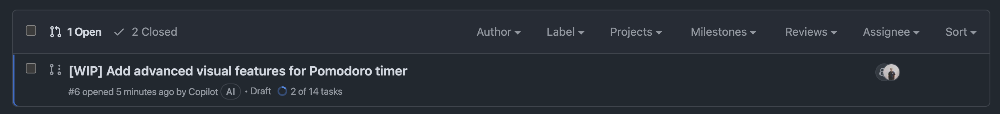
After a few minutes, depending on the task size, we can see the changes completed as a Pull Request.
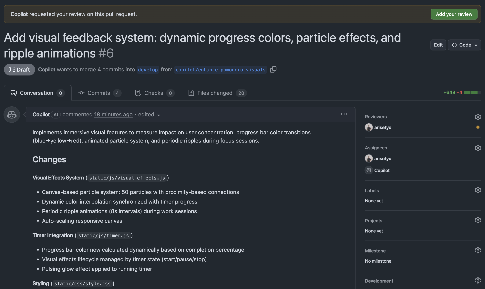
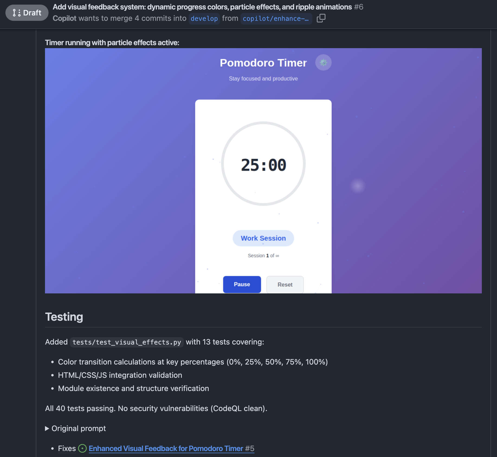
Add your review and then merge the PR.
With the new enhancement merged into our working branch, let's update the application documentation to reflect the latest changes.
Let's say we implemented the "Enhanced Visual Feedback" issue from our previous steps, we can ask Copilot to do this:
Update the application documentation to reflect the recent changes regarding Enhanced Visual Feedback.
Copilot will update your documentation based on the application's latest status.
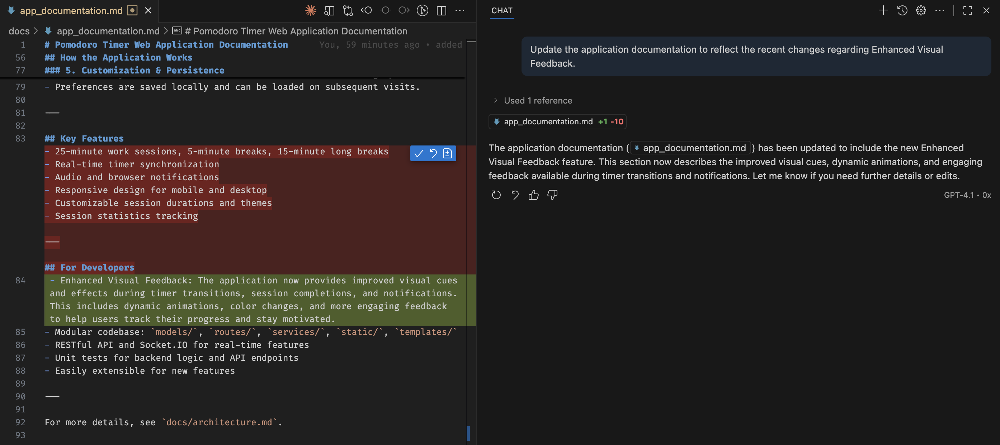
What We Learned Today
In this workshop, we learned using Github Copilot to do the following:
- Using specifications to develop an application
- Code explanation and improvement
- Utilizing agent functionality
- Adding issues and development of new features
Next Steps
- Try using Copilot in actual projects
- Challenge more complex application development
- Keep up with new Copilot features